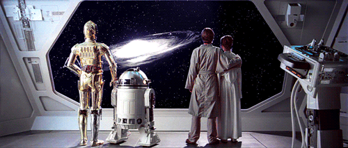

Por que Star Wars é a melhor obra do século.

Sobre o Criador
Olá, queridos fãs da galáxia de Star Wars! Meu nome é Thawany e sou o criador desta página dedicada ao universo de Star Wars.
Como fã, decidi compartilhar minha admiração por Star Wars com o mundo, criando este espaço virtual onde podemos explorar juntos essa galáxia muito, muito distante.
Além disso, este site é um tributo ao legado duradouro de George Lucas, o visionário por trás de Star Wars, cuja imaginação sem limites e habilidade de contar histórias transformaram a cultura popular para sempre.
É com grande respeito e admiração que dedico este espaço à sua criação magnífica.
Espero que vocês desfrutem da jornada através deste site tanto quanto eu desfrutei criando-o. Que a Força esteja conosco enquanto exploramos juntos as profundezas deste universo fascinante!
Que a Força esteja com vocês.